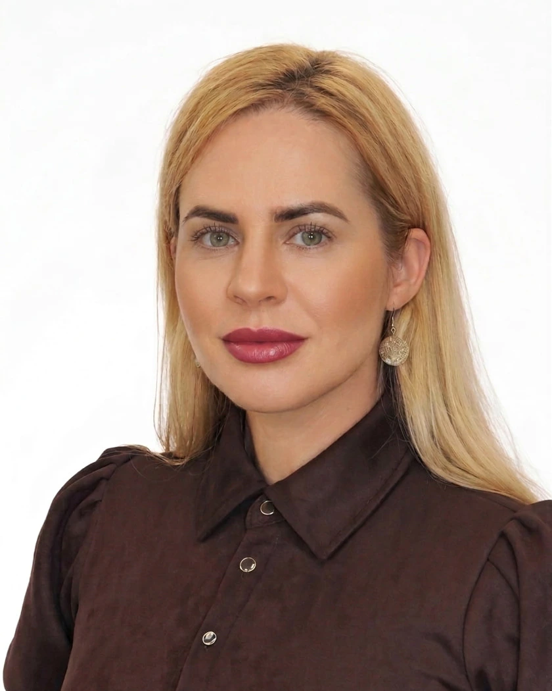
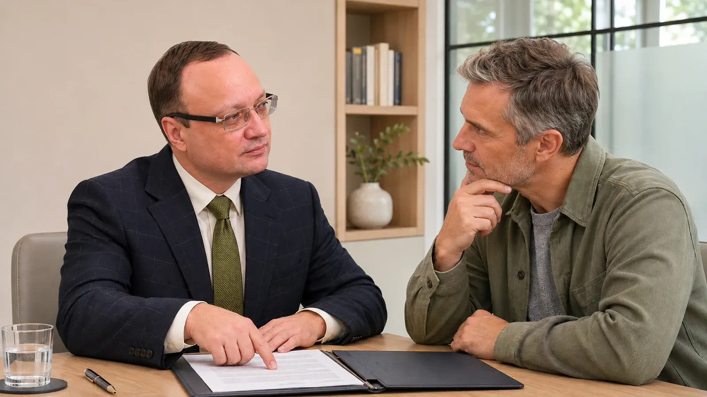
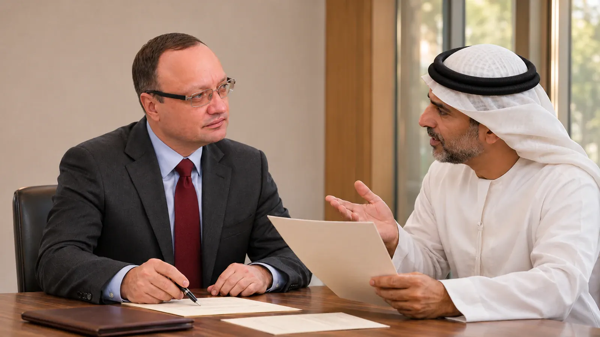

Your legal bridge to Ukraine
Ukrainian-law advocates for citizens of the EU, USA, Canada, UAE and Ukrainians abroad
Family, inheritance, property, business and documents in Ukraine — for citizens of other countries and Ukrainians living in Europe, the US, Canada or the UAE. Consultations in English and Ukrainian, by video in your time zone.
How would you like to reach us?
Practice areasAlso: inheritance · real estate · documents · business · disputes · criminal defence

Victoria SanduleevaUkrainian family lawyerYour matter in Ukraine — from any country
You are a citizen of another country or a Ukrainian abroad, and the matter is in Ukraine. We handle it from Kyiv, explain how the Ukrainian procedure works and fit around your time and your documents.
Documents from your country, translation and calls at a time that suits you. How documents are certified depends on the country:
Practice areas
Tap a practice area to see what we help with.
Family lawMain practiceChildren, divorce, property, child support
If you live abroad and your family matter involves Ukraine, start with a consultation with a Ukrainian lawyer. We assess where the matter can be handled, what documents are needed and whether you may need to attend in person.
Where a child lives and contact arrangements
We help parents living in different countries address where their child will live and how contact will work. We assess whether an agreement is possible, help draft its terms or prepare the client’s position for proceedings in Ukraine.
More about this practice →International child removal or retention
If a child has been taken to another country or has not returned as agreed, a lawyer reviews the circumstances, assesses whether the 1980 Hague Convention may apply and identifies the relevant authorities.
More about this practice →Division of property and marital agreements
We help establish the legal status of property in Ukraine, gather documents and assess whether an agreed division is possible. We also advise on the terms of marital agreements.
More about this practice →Divorce while living abroad
We assess whether your divorce can be handled in Ukraine, which procedure may suit your circumstances and whether remote participation is possible. We help prepare the required filings and documents.
More about this practice →Cross-border child support
If the child or one parent lives abroad, we assess where a child support claim can be brought and how an existing decision may be used in Ukraine.
More about this practice →Inheritance and estatesAcceptance, missed deadlines, wills

If an estate is being administered in Ukraine while you live abroad, we help identify the steps, deadlines and documents that apply to your case. We assess what can be done through a representative and what may require your involvement or a notarial act.
- Acceptance of inheritance
- Documenting inherited property rights
- Missed deadlines
- Wills
- Disputes between heirs
Real estate and constructionSale, purchase, title checks
We help verify title and encumbrances, agree sale or purchase terms and prepare documents concerning property in Ukraine. If you are abroad, a lawyer explains which steps might be handled under a power of attorney and which may require your involvement.
- Title due diligence
- Sales and purchases
- State registration
- Disputes with sellers, developers or contractors
Notarial documents and legalisationPowers of attorney, apostille, translations

We help prepare documents for use in Ukraine or abroad. We check the receiving authority’s requirements, identify whether an apostille, legalisation or a certified translation is needed and coordinate preparation with a notary or translator.
- Powers of attorney
- Notarised consents
- Documents from Ukrainian registers
- Apostille and legalisation
- Certified translations
Business and corporate lawCompanies, agreements, due diligence

We advise on decisions that shape the operation of a business in Ukraine. We help clients choose a business structure, document agreements among shareholders, review company records before a transaction and work through existing disputes.
- Company formation and changes to records
- Shareholder agreements
- Commercial agreements
- Legal due diligence
- Corporate disputes
Civil and commercial disputesContracts, debts, damages, courts
We help individuals and companies assess a dispute, gather evidence and decide whether negotiations or litigation are appropriate. If the matter goes to a Ukrainian court, we prepare court filings and represent the client within the agreed scope of work.
- Contract disputes
- Debt recovery
- Damages
- Interim measures
- Appeals and cassation
Criminal defencePre-trial investigation, trial

If you have received a summons or notice of suspicion, or learned of criminal proceedings in Ukraine, a lawyer can explain your procedural status and help you identify the immediate steps. We defend clients during pre-trial investigations and in court.
- Pre-trial defence
- Representation at trial
- Searches and asset freezes
What can be done remotely and what cannot
Without your travelFiling with the court, the advocate attending hearings, obtaining the decision.
Needs your participationSigning the agreement and power of attorney in your country; sometimes giving explanations to the court by video.
Without your travelCollecting documents and receiving the certificate of inheritance through a representative under a power of attorney.
Needs your participationYou file the application to accept the inheritance in person — through a consulate or a notary in your country.
Without your travelSale or purchase under a power of attorney, title checks, registration.
Needs your participationA power of attorney certified in your country, with an apostille or legalisation.
Draft: every statement is confirmed by the advocate before publication.
Who advises you
- Victoria Sanduleeva, Ukrainian family lawyer
- Certificate of the right to practise as an advocate No. 3531 of 28 July 2010
Check in the Unified Register of Advocates of Ukraine
Victoria Sanduleeva handles family law and related property disputes in Ukraine. She assists clients living abroad with divorce, child support, division of property and arrangements concerning children. When a case involves more than one country, Victoria helps clients understand what can be addressed in Ukraine and when counsel in another jurisdiction may be needed.
In the consultation the advocate explains what your situation means under Ukrainian law, what your options are and what each of them risks. We do not promise the outcome of a case.
Your legal bridge to Ukraine
Matters in Ukraine for foreign nationals and Ukrainians in Europe, the US, Canada and the UAE
How it works
- BookingYou write on Telegram or WhatsApp. Only your name and a convenient time.
- CheckThe advocate checks that there is no conflict of interest.
- ConsultationConsultation by video in your time zone: Google Meet, Telegram or WhatsApp.
- SummaryYou receive a written summary of the consultation.
- AgreementIf you decide to go ahead, the agreement is signed remotely.
An advocate handles every matter
We go through the documents with you, explain each step in plain language and agree decisions in writing.


If you are a foreign national or live abroad
The advocate does most of the work without your travel: files documents, attends hearings, obtains decisions. When your personal presence is required, we tell you so in the first consultation.
We prepare documents so that they are accepted in your country: notarisation, translation, apostille.
After every filing, hearing and deadline you get a short written update in the language you prefer.
The bureau advises and represents clients on Ukrainian law only. We do not practise the law of the United States, Canada, European states or the UAE.
The Ukrainian part of your client’s matter
If the matter involves a marriage, a child, property or an inheritance in Ukraine, we take that part and work alongside you.
- Written opinions on Ukrainian law in English
- Representation before Ukrainian courts, notaries and registries
- Agreed deadlines and updates for you and your client
The essentials
Who will handle my matter?
The advocate named to you before the consultation. They stay your main contact at every stage.
What should I prepare for the first call?
You do not need to send anything in advance. In the consultation the advocate tells you which documents are needed and how to hand them over safely.
Do I need to travel to Ukraine?
The advocate does much of the work without your travel. If your matter requires your personal presence, we tell you so in the first consultation.
Can you work together with my lawyer abroad?
Yes. When a matter involves several countries, we coordinate with your lawyer, accountant or notary.
How do I pay from abroad?
Payment method and currency are agreed in writing before work begins.
First consultation
Video call on Google Meet. In your first message, send only your name and a convenient time.
- ConfidentialDetails stay within the team
- Ukrainian and EnglishConsultations and written reports
- No need to travel to UkraineMost steps are handled remotely
Leave a request on the site
Confidential: only the advocate handling the matter sees your request